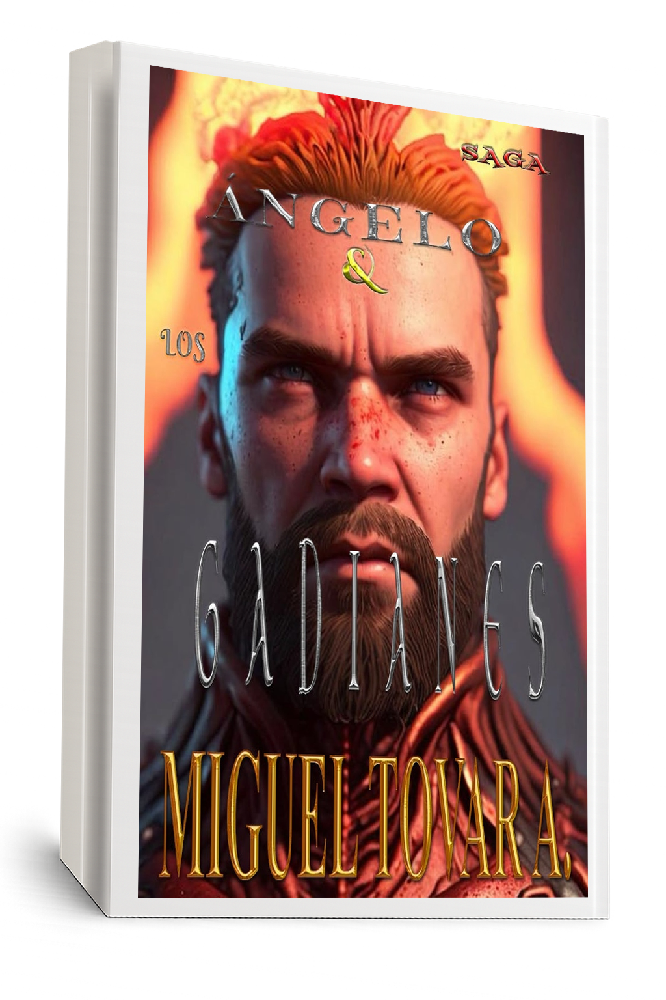

Una guerra secreta entre razas alienígenas y humanos, donde Ángelo descubre su legado ancestral. Después de sobrevivir a la catástrofe provocada por la toxina en el agua, Ángelo es llevado a un nuevo escenario donde nada es lo que parece.
En esta entrega, se enfrentará a los Gadianes, seres poderosos y antiguos que han conmovido el rumbo de la historia desde las sombras. Descubrirá que su existencia está ligada a una estirpe que ha protegido a la humanidad durante siglos.

¿Aún no lees el primer libro? Ángelo & El Proyecto Ditóx
Continúa la historia en Ángelo & Los Artefactos Misteriosos
¿Quieres conocer el universo completo? Explora La Saga de Ángelo